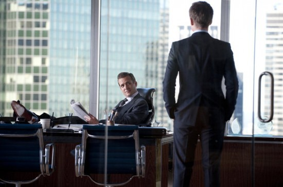
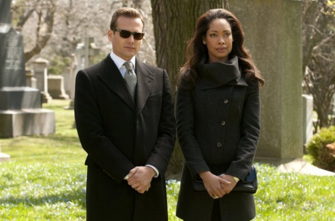
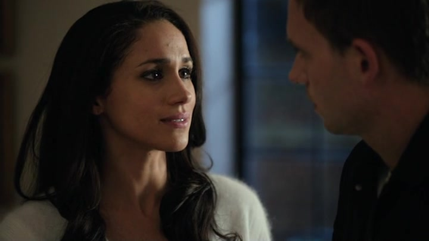
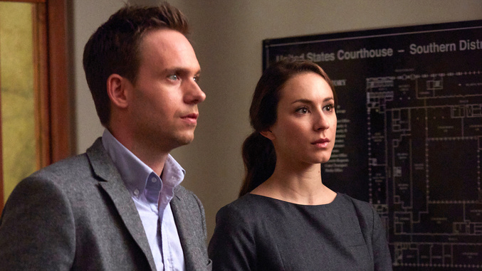
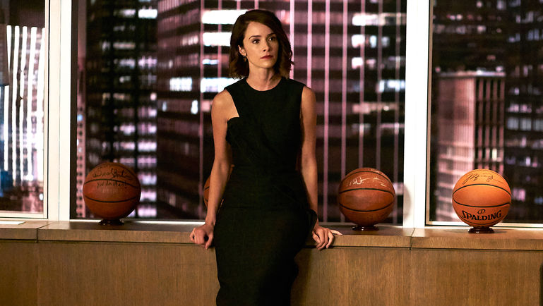
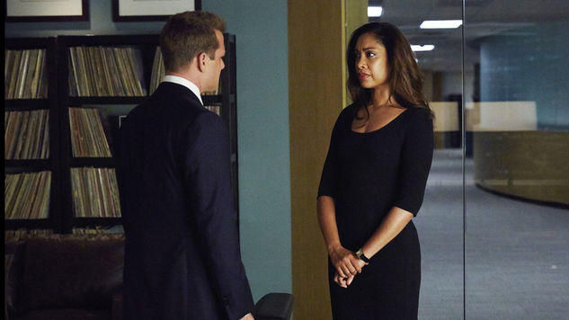

Suits
Suits is an American legal drama television series created and written by Aaron Korsh. The series premiered on June 23, 2011, on the cable network USA, and is produced by Universal Cable. Suits is set at a fictional law firm in New York City. The focal point of the show follows talented college dropout Mike Ross (Patrick J. Adams), who initially works as a law associate for Harvey Specter (Gabriel Macht), despite never actually attending law school. The show focuses on Harvey and Mike managing to close cases while maintaining Mike's secret.
Main Cast
Premise
While running from a drug deal gone bad, Mike Ross, a brilliant young college-dropout, slips into a job interview with one of New York City's best legal closers, Harvey Specter. Tired of cookie-cutter law school grads, Harvey takes a gamble by hiring Mike on the spot after he recognizes his raw talent and photographic memory. Mike and Harvey are a winning team. Even though Mike is a genius, he still has a lot to learn about law.
Episodes
Season 1(2011)
Mike Ross (Patrick J. Adams) is a highly intelligent college dropout, who, with his natural intelligence and eidetic memory, makes a living illegally taking the LSAT for others. To keep raising money to pay for care for his terminally ill grandmother, he agrees to deliver a large case of marijuana for his best friend drug dealer Trevor (Tom Lipinski).
Recently made senior partner, Harvey must hire a Harvard Law–educated associate. Mike uses his mental gifts and street-smarts to prove he is undoubtedly the best choice, even though a fraud.
Season 2(2012-13)
Following Trevor's revelation of Mike's secret to Jessica (Gina Torres), she continues to let Mike work at the firm, which also coincides with co-founding partner Daniel Hardman (David Costabile) returning to the firm. Both Jessica and Harvey fear he wishes to return to his former position as managing partner, which will result in Jessica and Harvey being fired.
A lawsuit charging fraud is filed against Pearson Hardman, and Harvey is accused of burying evidence and faces disbarment. Despite Harvey maintaining his innocence, Donna (Sarah Rafferty) finds and destroys the buried evidence. When she finds out, Jessica fires Donna from the firm. Hardman and Jessica disagree over how to settle the case, which leads Hardman to challenge Jessica for the position of managing partner.
Season 3(2013-14)
The merger between Pearson and Darby International is now complete and Harvey, stinging from Jessica's refusal to make him a name partner, begins plotting with Darby to take her down. After Harvey manages to settle a case with his old mentor, Cameron Dennis (Gary Cole), Harvey's client, Ava Hessington (Michelle Fairley), is arrested for murder. Darby sends his "fixer", Stephen Huntley (Max Beesley), to help with the case.
Harvey informs Jessica, who says that if he wins the case, she will add him as name partner. Ava looks set to be convicted until Mike discovers Huntley was actually responsible for the murders, something of which Darby had no previous knowledge. Darby eventually agrees to testify against Huntley, only later realizing his own plea bargain will leave him unable to practice law in the United States.
Season 4(2014-15)
As Mike begins working as an investment banker for Jonathan Sidwell, he finds himself in an awkward situation when a takeover battle for Gillis Industries pits Mike against Pearson Specter client (and Rachel's former boyfriend) Logan Sanders (Brendan Hines). This leads to a battle between Mike and Harvey, who are accused of colluding by the SEC. A team led by Sean Cahill (Neal McDonough), who is determined to defeat Pearson Specter, investigates the claim under direct orders from Eric Woodall (Željko Ivanek).
Following back and forth takeover attempts from both Mike and Logan, Mike turns to Charles Forstman (Eric Roberts), a shady billionaire investor who agrees to invest to save Gillis Industries, giving Sidwell nothing from the Gillis Industries takeover. Mike reluctantly agrees to the deal, but Forstman informs Sidwell about the secret condition in order to get Mike fired.
Season 5(2015-16)
Harvey hires a new secretary who appears the opposite of Donna, but proves herself capable. However, he still struggles with losing Donna. After experiencing a serious panic attack, he seeks therapy, but finds it difficult to open up to a therapist who wants to address his abandonment issues. She slowly gets him to talk about his mother's affair throughout the season.
Meanwhile, Louis worries that Donna will leave him and return to Harvey. When he finds out that Harvey had been paying most of Donna's extremely high salary, he conspires with partner Jack Soloff (John Pyper-Ferguson) to alter the firm's compensation structure and undermine Harvey, which gets him in trouble with Jessica as Soloff makes a power play.
Season 6(2016-17)
The summer season's episodes focus on Mike's struggles in prison, where he is continually threatened by inmate Frank Gallo whom Harvey prosecuted and put away 13 years ago when he was working in the DA's office.
Mike befriends his cellmate Kevin, only to later find he has to inform on Kevin to fulfill a deal Sean Cahill made with Harvey to get Mike released early. At the firm, the few remaining employees try to recover from the loss of all the partners and possible lawsuits stemming from any cases Mike worked on.